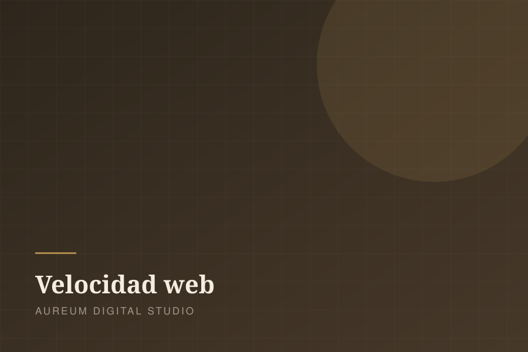

Lo que le cuesta a tu negocio no tener página web

«Mi negocio funciona con el boca a boca, no necesito web.» Es la frase más cara que puede decir un empresario en 2026. El boca a boca sigue existiendo, pero ha cambiado de sitio: ahora ocurre en Google. Y cuando alguien te busca y no te encuentra, no piensa «qué negocio tan auténtico». Piensa que has cerrado.
Te buscan antes de comprarte
El 80% de las personas investiga en internet antes de comprar, incluso cuando la compra final se hace en tienda física (fuente). En España, el 75% consulta opiniones online antes de decidirse (Barómetro del eCommerce). Esa investigación termina en algún sitio: si no es tu web, es la de tu competencia.
El caso más claro: la hostelería
En restauración los números son contundentes: el 77% de los comensales consulta la web del restaurante antes de visitarlo (Restaurant Dive) y el 93% mira la carta online antes de elegir dónde comer. Peor aún: cerca del 70% reconoce haber descartado un restaurante por culpa de su web —anticuada, lenta o sin la información básica— (encuesta MGH).
No tener web no te hace «de toda la vida». Te hace invisible para el 80% que decide con el móvil en la mano.
Tener web mala también cuesta dinero
Una web lenta o rota resta en vez de sumar. Según Google, el 53% de los usuarios abandona una página móvil que tarda más de 3 segundos en cargar, y cada segundo adicional reduce las conversiones hasta un 20% (Think with Google). Y con más del 85% del tráfico español llegando desde el móvil (Semrush), «se ve raro en el móvil» significa «se ve raro para casi todos».
Qué necesita de verdad un negocio local
No hace falta un proyecto de miles de euros. Una web eficaz para un negocio local necesita cuatro cosas: cargar rápido, verse perfecta en el móvil, responder lo que el cliente busca (qué haces, cuánto cuesta, dónde estás, cómo contactarte) y un botón de contacto directo. Todo lo demás es decoración.
Con ese planteamiento, una web profesional cuesta desde 690€, se publica en 7 días y trabaja para ti todos los días del año. Es, con diferencia, el empleado más barato que vas a contratar.
¿Tu negocio sigue sin web (o con una que espanta)?
Te enseñamos cómo quedaría la tuya antes de que pagues nada.
Pide tu propuesta gratuita